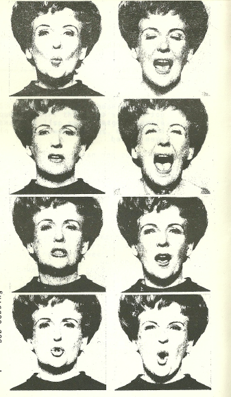

Dave Briers
The writer of found poems will require the following articles:
A hammer will be found most generally useful.
Stout and thin paper, and some of a soft kind for wrapping up specimens.
String, sealing wax, and writing paper gumed on one side,
for labels to affix to specimens on the spot.
A strong pair of gloves, and a pair of eye preservers.
A measuring tape, a pocket compass, and drawing materials
will be required.
Blank memorandum books.
(From a fossil hunters manual)